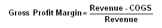

A financial metric used to assess a firm's financial health by revealing the proportion of money left over from revenues after accounting for the cost of goods sold. Gross profit margin serves as the source for paying additional expenses and future savings.
Calculated as:
Where: COGS = Cost of Goods Sold
Also known as "gross margin."
The gross margin is not an exact estimate of the company's pricing strategy but it does give a good indication of financial health. Without an adequate gross margin, a company will be unable to pay its operating and other expenses and build for the future. In general, a company's gross profit margin should be stable. It should not fluctuate much from one period to another, unless the industry it is in has been undergoing drastic changes which will affect the costs of goods sold or pricing policies.
For example, suppose that ABC Corp. earned $20 million in revenue from producing widgets and incurred $10 million in COGS-related expense. ABC's gross profit margin would be 50%. This means that for every dollar that ABC earns on widgets, it really has only $0.50 at the end of the day.
This metric can be used to compare a company with its competitors. More efficient companies will usually see higher profit margins.
{kind=link}